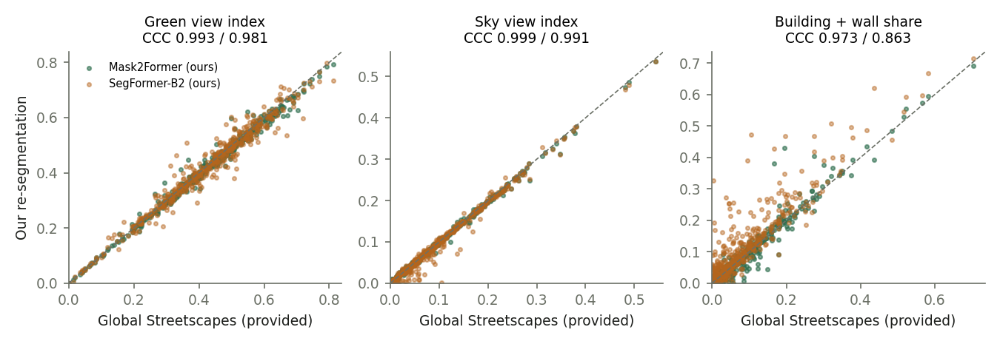
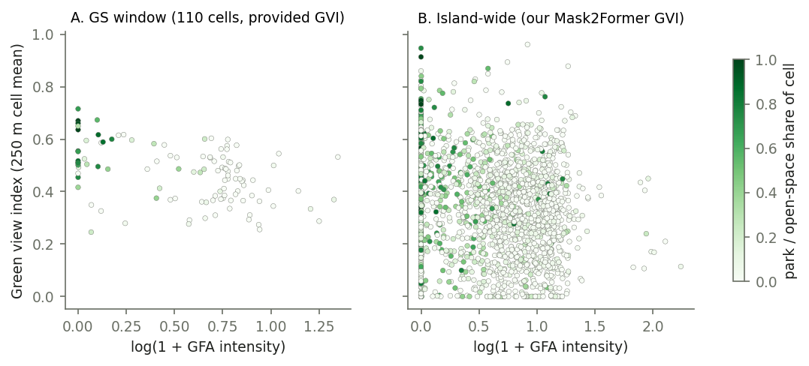
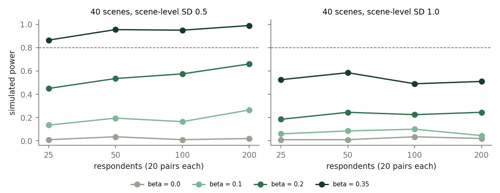

We ask how street-level visual features vary with built density in Singapore, and how one would test whether greenery makes density feel less crowded.
High-density housing is central to Singapore’s land-use strategy. Whether it feels dense depends partly on what people see at street level: trees, sky, façades. Street-view imagery with semantic segmentation has become the standard way to measure that view at scale (e.g. GVI and SVI). Large open datasets such as Global Streetscapes (Hou et al., 2024) now ship these measures pre-computed.
Before such measures are linked to density or used to pick survey stimuli, three questions matter. Can we reproduce them? How sensitive are they to the model? How do they relate to density once obvious confounders are handled? This note answers the first two directly. It gives a cautious, confounder-aware answer to the third. For the perceptual question that images alone cannot answer, it designs (but does not run) a survey.
Global Streetscapes. We retrieved all Singapore rows from the Hugging Face release (CC BY-SA 4.0) with DuckDB HTTP range reads: segmentation pixel counts, GVI/SVI, contextual labels, perception predictions and OSM road attributes. There are 22,327 images. All of them lie within ~2.4 km of the city reference point, covering parts of Tanglin, Queenstown and Bukit Timah. Mapillary images need a token and were not downloaded. KartaView images are public.
Island-wide KartaView sample. We queried the public KartaView API on a 1 km hexagonal lattice with a 500 m search radius. That returned 12,804 unique photos. We kept those taken 08:00–17:59 local time, in 2015 or later, and non-panoramic, then took at most two per 250 m cell from distinct sequences, and downloaded 2,580, all of which were segmented (2,580 photos in 1,868 cells and 53 planning areas).
Density proxies come from data.gov.sg under the Singapore Open Data Licence:
We did not use OSM footprints, to avoid mixing ODbL and CC BY-SA in redistributed derived tables.
Segmentation. We ran inference only, on 1280×720
thumbnails in fp16 (GTX 1650, 4 GB). Two models were used:
mask2former-swin-large-mapillary-vistas-semantic (65
classes, identical to the dataset’s label set) and
segformer-b2-finetuned-cityscapes (19 classes). GVI =
vegetation / all pixels and SVI = sky / all pixels, following the
dataset’s definition (its denominator includes ego-vehicle pixels).
Building share = (building + wall) / all pixels. Agreement is summarised
with Pearson’s r, Lin’s concordance correlation coefficient (CCC), mean
absolute error and Bland–Altman limits.
Spatial unit and density. We used a 250 m square grid in SVY21. The GFA intensity of a cell is Σ(GPR × parcel area) / cell area. Landed-housing parcels (“LND”, which have no numeric GPR) are assigned 1.4; a sensitivity run excludes them. Parcels with GPR “EVA” or “SDP”, parks and roads contribute zero. Covariates: park/open-space, residential and road land shares, and HDB footprint coverage.
Models.
Survey instrument. A static web page shows two scenes and asks which “feels less crowded”. The stimuli are 40 face/plate-blurred scenes stratified by density quartile × GVI tertile. Each respondent gets 20 trials, including one swapped repeat. The planned analysis has two stages:
Power was estimated by simulating that exact pipeline under the pre-registered generative model.
Reproduction and model sensitivity. Against the dataset values, our Mask2Former run gives CCC 0.993 for GVI (MAE 0.012), 0.999 for SVI and 0.973 for building share. SegFormer gives 0.981, 0.991 and 0.863 respectively, with a building-share bias of +0.027. GVI and SVI are therefore robust to model choice. Building share is model-specific and should not be pooled across models.

Density, Tier A (22,104 images, 110 cells).
Density, Tier B (2,580 images). The adjusted slopes are +0.068 [+0.040, +0.096] for building share, -0.060 [-0.088, -0.032] for GVI and -0.015 [-0.052, +0.022] for SVI. In blocked CV, density alone reaches R² 0.11 for building share and 0.01 for GVI. With one or two photos per cell, the slopes are well-estimated, but density predicts any single street view poorly. Residual Moran’s I remains positive (GVI 0.12), which is why SEs are clustered and CV holds out whole 2 km blocks.

Softened-density candidates. These are top-quartile-intensity cells that are greener than predicted (Tier A: from density plus image-composition controls; Tier B: from density alone): 15 of 28 in Tier A and 110 of 467 in Tier B (the latter also requiring median-or-better sky view). They are listed for visual inspection as possible design precedents. They are not established precedents.
Survey power (simulated). With a scene-level SD of 0.5 and 20 pairs per respondent, an effect of 0.35 logit per SD of GVI is detected with probability 96% at 50 respondents and 95% at 100. At β = 0.2, power is 57% at 100 and 66% at 200 respondents. The false-positive rate under β = 0 is 1% at 100 respondents. Power hardly grows with respondents. Scene-level appeal is shared by everyone, so with 40 scenes it is the binding constraint, and at a scene-level SD of 1.0 even β = 0.35 reaches only 49% at 100 respondents. The practical implication is to enlarge the stimulus set before recruiting more people. Simulating larger stimulus sets is the next step.

No human-subject data were collected. Any deployment of the survey requires institutional ethics approval, informed consent and anonymous data handling (protocol §7). The demo page transmits nothing. Imagery is CC BY-SA 4.0 volunteered content. Survey stimuli are restricted to photos the platform reports as face/plate-blurred, and derived tables contain no images or personal data.